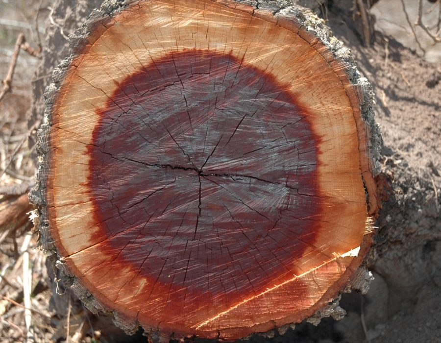

Maderas nativas argentinasN.º 2
Quebracho colorado
Schinopsis balansae · Anacardiáceas

Foto: Valerio Pillar, CC BY-SA 2.0, recortada.
- Otros nombres
- Quebracho colorado chaqueño o santafesino; ibirá-atá
- Dónde crece
- Chaco, Formosa, Corrientes y el norte de Santa Fe y de Entre Ríos
- Color
- Castaño rojizo; albura blanco rosácea
- Peso
- Unos 1.250 kg/m³; se hunde
- Dureza
- Muy dura
- Durabilidad
- Máxima: más de 30 años en servicio
- En el taller
- Se raja al secar y desafila
- Protección
- Árbol Forestal Nacional (1956)
Florece desde diciembresoydemadera.com